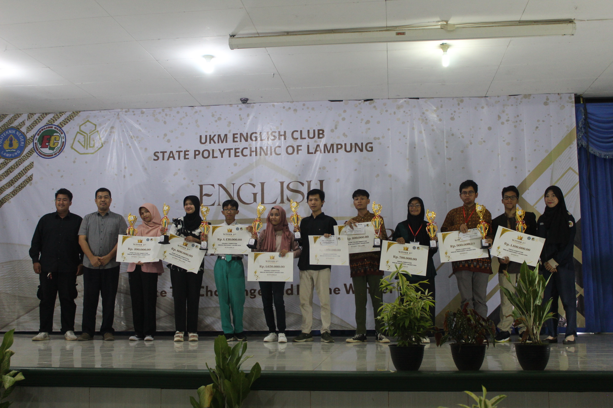
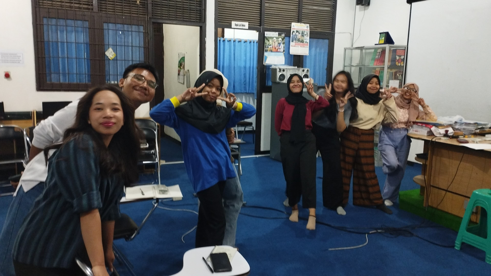
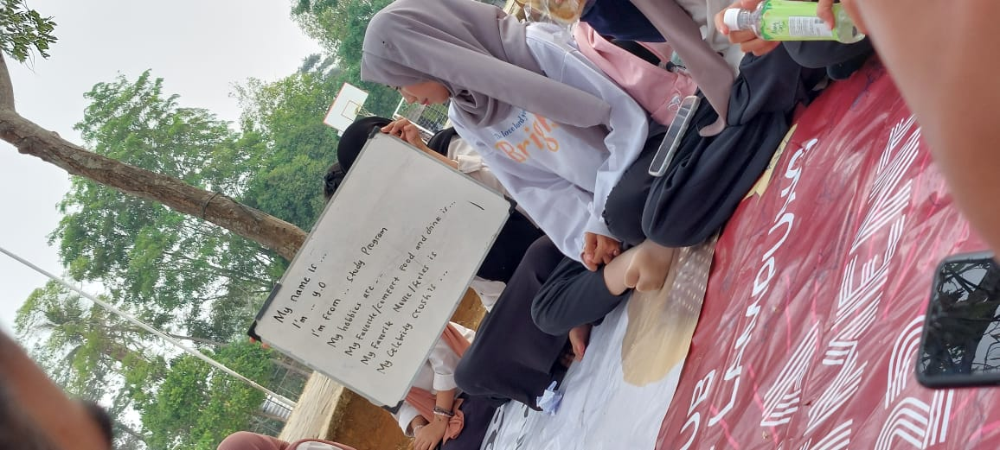

Sejarah

UKM English Club merupakan sebuah organisasi kemahasiswaan intra perguruan tinggi yang berkedudukan di Politeknik Negeri Lampung, dibentuk pada tanggal 4 Desember 2004. Berdasarkan keputusan Majelis Permusyawaratan Mahasiswa keluarga besar Mahasiswa Politeknik Negeri Lampung.
Sebagai bentuk mewadahi membernya, UKM English Club menyediakan 2 Subdivisi untuk pengembangan diri di bawah naungan Divisi Skill & Achievement yaitu Scrabble dan Debate ada pula Public Speaking yang diterapkan sebagai agenda wajib seluruh member untuk mengikuti kelas. Masing-masing Subdivisi memiliki kegiatan kelas rutin yang diadakan tiap minggu, dan diikuti oleh member-member per subdivisi. Selain kegiatan kelas rutin, terdapat juga kegiatan kelas rutin Intercomp (Internal Competition) yang dikhususkan untuk member UKM English Club, dan bersaing untuk menjadi yang terbaik.
Program Kerja
New Member Training

New Member Training merupakan program kerja tahunan dari UKM English Club Politeknik Negeri Lampung. Program kerja ini ditujukan kepada mahasiswa baru Politeknik Negeri Lampung yang baru tergabung menjadi anggota baru UKM English Club.
Tujuan dari program kerja New Member Training ini adalah untuk penyambutan anggota baru UKM English Club serta mengenalkan lebih dalam UKM English Club kepada anggota baru tersebut. Kegiatan yang dilakukan pada program kerja New Member Training ini merupakan kegiatan yang selalu mengusung tema menyenangkan, kekeluargaan, serta menambah pengalaman anggota. Program kerja New Member Training ini merupakan program kerja terbesar kedua setelah program kerja English Proficiency Awards.
English Proficiency Awards

English Proficiency Awards (EPA) merupakan salah satu
program kegiatan dari English Club yang ditujukan
meningkatkan wawasan serta menambah pengalaman
untuk pelajar-pelajar yang ada di provinsi Lampung dalam
mengejar serangkaian prestasi di bidang pendidikan
khususnya bahasa inggris serta menambah minat dan
mengembangkan bakat pelajar dan mahasiswa dalam
cabang perlombaan Scrabble, Speech, Story Teling dan
Debate SMA.
Tujuan penyelenggaraan kegiatan English Proficiency Awards ini adalah :
- Menyelenggarakan kompetisi bahasa Inggris pada berbagai bidang dan tingkatan.
- Mengenalkan eksistensi UKM English Club POLINELA ke masyarakat luas.
- Menambah wawasan dan pengalaman bagi peserta dalam berkompetisi untuk menjadi yang terbaik
Divisi
Debate

UKM English Club memiliki program kelas debat yang diadakan setiap jum'at sore untuk meningkatkan kemampuan berbahasa Inggris dan komunikasi anggotanya. Dalam kelas ini, peserta mendebatkan berbagai topik dalam bahasa Inggris, mulai dari isu sosial hingga budaya. Format kelas melibatkan dua tim yang berdebat, memberikan kesempatan kepada semua anggota untuk mengasah kemampuan berbicara, mendebat, dan mendengarkan. Setelah debat, peserta saling memberikan umpan balik, mempromosikan suasana belajar dan saling menghargai. Kelas debat ini juga menjadi kesempatan bagi anggota untuk mempererat hubungan dan mendukung pertumbuhan masing-masing.
Scrabble

Kelas Scrabble di English Club adalah pertemuan mingguan yang penuh keceriaan dan tantangan. Peserta dibagi menjadi kelompok dan bersaing untuk merangkai kata dengan nilai tertinggi. Meski penuh dengan tawa dan canda, kelas ini juga mengajarkan strategi dan kreativitas. Di akhir kelas, semua peserta berbagi pengalaman dan pelajaran yang mereka dapat. Belajar bahasa Inggris melalui Scrabble di sini bukan hanya tentang membaca dan menulis, tetapi juga tentang bermain, tertawa, dan tumbuh bersama.
Public Speaking

Kelas Public Speaking di English Club adalah pertemuan yang menggabungkan belajar dan berani. Setiap minggu, peserta mendapatkan kesempatan untuk berdiri di depan teman-teman mereka dan berbicara tentang berbagai topik. Dengan bimbingan dari pelatih, mereka belajar bagaimana menyusun kata-kata, mengekspresikan ide, dan menghadapi rasa gugup. Meski awalnya menantang, namun setiap pertemuan selalu berakhir dengan rasa percaya diri yang lebih besar. Kelas Public Speaking ini bukan hanya tentang berbicara di depan umum, tapi juga tentang membangun kepercayaan diri dan belajar menghargai suara kita sendiri.